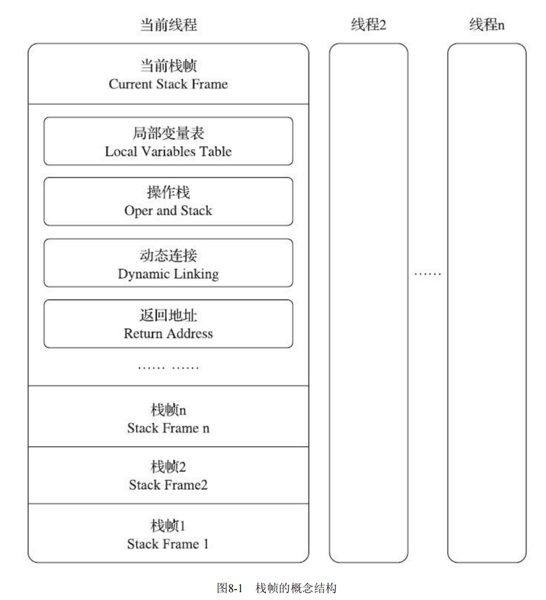
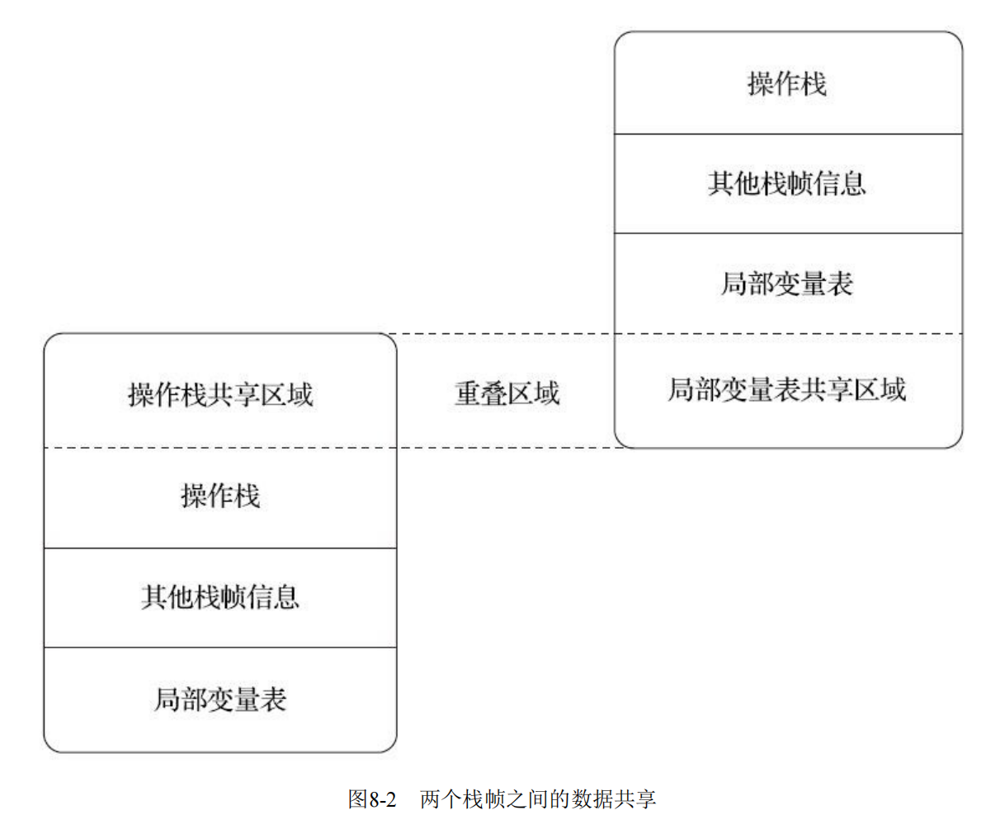
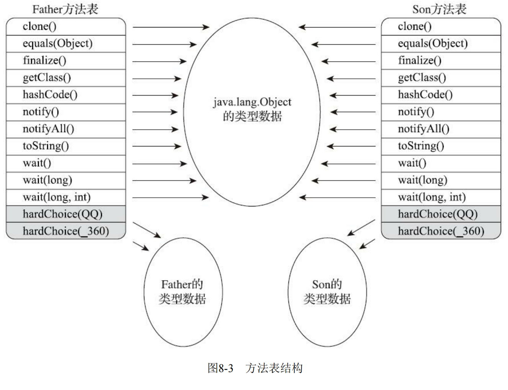
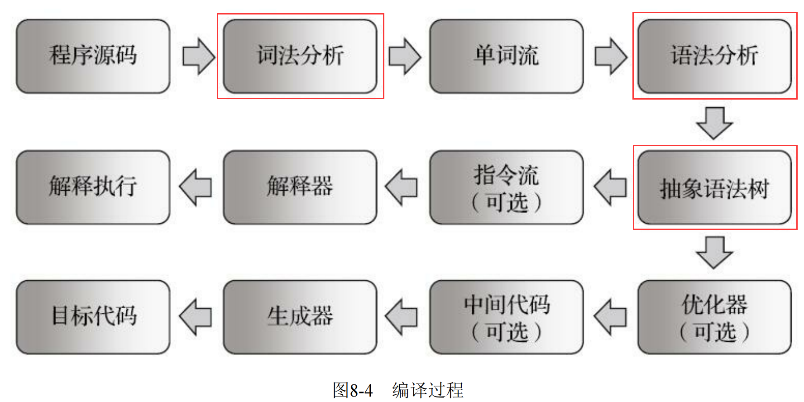

第8章 虚拟机字节码执行引擎
8.1 概述
执行引擎是Java虚拟机核心的组成部分之一。
“虚拟机”是一个相对于“物理机”的概念，这两种机器都有代码执行能力，其区别是
- 物理机的执行引擎是直接建立在处理器、缓存、指令集和操作系统层面上的，
- 而虚拟机的执行引擎则是由软件自行实现的，因此可以不受物理条件制约地定制指令集与执行引擎的结构体系，能够执行那些不被硬件直接支持的指令集格式。
在不同的虚拟机实现中，执行引擎在执行字节码的时候，通常会有解释执行（通过解释器执行）和编译执行（通过即时编译器产生本地代码执行）两种选择，也可能两者兼备，还可能会有同时包含几个不同级别的即时编译器一起工作的执行引擎。
但从外观上来看，所有的Java虚拟机的执行引擎输入、输出都是一致的：输入的是字节码二进制流，处理过程是字节码解析执行的等效过程，输出的是执行结果。
8.2 运行时栈帧结构
Java虚拟机以方法作为最基本的执行单元，“栈帧”（Stack Frame）则是用于支持虚拟机进行方法调用和方法执行背后的数据结构，它也是虚拟机运行时数据区中的虚拟机栈（Virtual Machine Stack）的栈元素。
栈帧存储了方法的局部变量表、操作数栈、动态连接和方法返回地址等信息。
每一个方法从调用开始至执行结束的过程，都对应着一个栈帧在虚拟机栈里面从入栈到出栈的过程。
在编译Java程序源码的时候，栈帧中需要多大的局部变量表，需要多深的操作数栈就已经被分析计算出来，并且写入到方法表的Code属性之中。换言之，一个栈帧需要分配多少内存，并不会受到程序运行期变量数据的影响，而仅仅取决于程序源码和具体的虚拟机实现的栈内存布局形式。
一个线程中的方法调用链可能会很长，以Java程序的角度来看，同一时刻、同一条线程里面，在调用堆栈的所有方法都同时处于执行状态。
而对于执行引擎来讲，在活动线程中，只有位于栈顶的方法才是在运行的，只有位于栈顶的栈帧才是生效的，其被称为“当前栈帧”（Current Stack Frame），与这个栈帧所关联的方法被称为“当前方法”（Current Method）。

8.2.1 局部变量表
局部变量表（Local Variables Table）是一组变量值的存储空间，用于存放方法参数和方法内部定义的局部变量。
在Java程序被编译为Class文件时，就在方法的Code属性的max_locals数据项中确定了该方法所需分配的局部变量表的最大容量。
局部变量表的容量以变量槽（Variable Slot）为最小单位。
一个变量槽可以存放一个32位以内的数据类型，Java中占用不超过32位存储空间的数据类型有boolean、byte、char、short、int、 float、reference[^1]和returnAddress这8种类型。
- 第7种reference类型表示对一个对象实例的引用，虚拟机实现至少都应当能通过这个引用做到两件事情
- 一是从根据引用直接或间接地查找到对象在Java堆中的数据存放的起始地址或索引，(堆里找对象)
- 二是根据引用直接或间接地查找到对象所属数据类型在方法区中的存储的类型信息，（方法区找类信息）
对于64位的数据类型，Java虚拟机会以高位对齐的方式为其分配两个连续的变量槽空间。Java语言中明确的64位的数据类型只有long和double两种。
Java虚拟机通过索引定位的方式使用局部变量表，索引值的范围是从0开始至局部变量表最大的变量槽数量。
- 如果访问的是32位数据类型的变量，索引N就代表了使用第N个变量槽，
- 如果访问的是64位数据类型的变量，则说明会同时使用第N和N+1两个变量槽。
- 对于两个相邻的共同存放一个64位数据的两个变量槽，虚拟机不允许采用任何方式单独访问其中的某一个。
当一个方法被调用时，Java虚拟机会使用局部变量表来完成参数值到参数变量列表的传递过程，即实参到形参的传递。
如果执行的是实例方法（没有被static修饰的方法），那局部变量表中第0位索引的变量槽默认是用于传递方法所属对象实例的引用，在方法中可以通过关键字“this”来访问到这个隐含的参数。
其余参数则按照参数表顺序排列，占用从1开始的局部变量槽，参数表分配完毕后，再根据方法体内部定义的变量顺序和作用域分配其余的变量槽。
为了尽可能节省栈帧耗用的内存空间，局部变量表中的变量槽是可以重用的，方法体中定义的变量，其作用域并不一定会覆盖整个方法体，如果当前字节码PC计数器的值已经超出了某个变量的作用域，那这个变量对应的变量槽就可以交给其他变量来重用。
示例
不过，这样的设计除了节省栈帧空间以外，还会伴随有少量额外的副作用，例如在某些情况下变量槽的复用会直接影响到系统的垃圾收集行为，请看代码清单8-1、代码清单8-2和代码清单8-3的3个演示。
代码清单8-1
代码清单8-1 局部变量表槽复用对垃圾收集的影响之一
1 | public static void main(String[] args) { |
运行结果：
1 | [GC (System.gc()) 68137K->66192K(249344K), 0.0008771 secs] |
代码清单8-1的代码没有回收掉placeholder所占的内存是能说得过去，因为在执行System.gc()时，变量placeholder还处于作用域之内，虚拟机自然不敢回收掉placeholder的内存。那我们把代码修改一下，变成代码清单8-2的样子。
代码清单8-2
代码清单8-2 局部变量表Slot复用对垃圾收集的影响之二
1 | public static void main(String[] args) { |
运行结果：
1 | [GC (System.gc()) 68137K->66216K(249344K), 0.0007998 secs] |
加入了花括号之后，placeholder的作用域被限制在花括号以内，从代码逻辑上讲，在执行System.gc()的时候，placeholder已经不可能再被访问了，但执行这段程序，会发现运行结果如上，还是有64MB的内存没有被回收掉，这又是为什么呢？
在解释为什么之前，我们先对这段代码进行第二次修改，在调用System.gc()之前加入一行“int
a=0；”，变成代码清单8-3的样子。
代码清单8-3
代码清单8-3 局部变量表Slot复用对垃圾收集的影响之三
1 | public static void main(String[] args) { |
这个修改看起来很莫名其妙，但运行一下程序，却发现这次内存真的被正确回收了：
1 | [GC (System.gc()) 68137K->66176K(249344K), 0.0014831 secs] |
代码清单8-1至8-3中，placeholder能否被回收的根本原因就是：局部变量表中的变量槽是否还存有关于placeholder数组对象的引用。
- 第一次修改中，代码虽然已经离开了placeholder的作用域，但在此之后，再没有发生过任何对局部变量表的读写操作，placeholder原本所占用的变量槽还没有被其他变量所复用，所以作为GC Roots一部分的局部变量表仍然保持着对它的关联。这种关联没有被及时打断，绝大部分情况下影响都很轻微。
手动将其设置为null值（用来代替那句int a=0，把变量对应的局部变量槽清空）便不见得是一个绝对无意义的操作，这种操作可以作为一种在极特殊情形（对象占用内存大、此方法的栈帧长时间不能被回收、方法调用次数达不到即时编译器的编译条件）下的“奇技”来使用。（通常赋null值的操作在经过即时编译优化后几乎是一定会被当作无效操作消除掉的，这时候将变量设置为null就是毫无意义的行为）
从编码角度讲，以恰当的变量作用域来控制变量回收时间才是最优雅的解决方法。
如果一个局部变量定义了但没有赋初始值，那它是完全不能使用的。所以不要认为Java中任何情况下都存在诸如整型变量默认为0、布尔型变量默认为false等这样的默认值规则。
8.2.2 操作数栈
操作数栈（Operand Stack）也常被称为操作栈，它是一个后入先出（Last In First Out，LIFO）栈。
同局部变量表一样，操作数栈的最大深度也在编译的时候被写入到Code属性的max_stacks数据项之中。
- 操作数栈的每一个元素都可以是包括long和double在内的任意Java数据类型。
- 32位数据类型所占的栈容量为1，64位数据类型所占的栈容量为2。
Javac编译器的数据流分析工作保证了在方法执行的任何时候，操作数栈的深度都不会超过在max_stacks数据项中设定的最大值。
当一个方法刚刚开始执行的时候，这个方法的操作数栈是空的，在方法的执行过程中，会有各种字节码指令往操作数栈中写入和提取内容，也就是出栈和入栈操作。
譬如在做算术运算的时候是通过将运算涉及的操作数栈压入栈顶后调用运算指令来进行的，又譬如在调用其他方法的时候是通过操作数栈来进行方法参数的传递。
举个例子，例如整数加法的字节码指令iadd，这条指令在运行的时候要求操作数栈中最接近栈顶的两个元素已经存入了两个int型的数值，当执行这个指令时，会把这两个int值出栈并相加，然后将相加的结果重新入栈。
操作数栈中元素的数据类型必须与字节码指令的序列严格匹配，在编译程序代码的时候，编译器必须要严格保证这一点，在类校验阶段的数据流分析中还要再次验证这一点。
再以上面的iadd指令为例，这个指令只能用于整型数的加法，它在执行时，最接近栈顶的两个元素的数据类型必须为int型，不能出现一个long和一个float使用iadd命令相加的情况。
另外在概念模型中，两个不同栈帧作为不同方法的虚拟机栈的元素，是完全相互独立的。但是在大多虚拟机的实现里都会进行一些优化处理，令两个栈帧出现一部分重叠。
让下面栈帧的部分操作数栈与上面栈帧的部分局部变量表重叠在一起，这样做不仅节约了一些空间，更重要的是在进行方法调用时就可以直接共用一部分数据，无须进行额外的参数复制传递了，重叠的过程如图8-2所示。

8.2.3 动态连接
每个栈帧都包含一个指向运行时常量池中该栈帧所属方法的引用，持有这个引用是为了支持方法调用过程中的动态连接（Dynamic Linking）。通过第6章的讲解，我们知道Class文件的常量池中存有大量的符号引用，字节码中的方法调用指令就以常量池里指向方法的符号引用作为参数。
- 这些符号引用一部分会在类加载阶段或者第一次使用的时候就被转化为直接引用，这种转化被称为静态解析。
- 另外一部分将在每一次运行期间都转化为直接引用，这部分就称为动态连接。
8.2.4 方法返回地址
当一个方法开始执行后，只有两种方式退出这个方法。
- 第一种方式是执行引擎遇到任意一个方法返回的字节码指令，这时候可能会有返回值传递给上层的方法调用者（调用当前方法的方法称为调用者或者主调方法），方法是否有返回值以及返回值的类型将根据遇到何种方法返回指令来决定，这种退出方法的方式称为“正常调用完成”（Normal Method Invocation Completion）。
- 另外一种退出方式是在方法执行的过程中遇到了异常，并且这个异常没有在方法体内得到妥善处理。无论是Java虚拟机内部产生的异常，还是代码中使用athrow字节码指令产生的异常，只要在本方法的异常表中没有搜索到匹配的异常处理器，就会导致方法退出，这种退出方法的方式称为“异常调用完成（Abrupt Method Invocation Completion）”。一个方法使用异常完成出口的方式退出，是不会给它的上层调用者提供任何返回值的。
无论采用何种退出方式，在方法退出之后，都必须返回到最初方法被调用时的位置，程序才能继续执行，方法返回时可能需要在栈帧中保存一些信息，用来帮助恢复它的上层主调方法的执行状态。
一般来说，方法正常退出时，主调方法的PC计数器的值就可以作为返回地址，栈帧中很可能会保存这个计数器值。而方法异常退出时，返回地址是要通过异常处理器表来确定的，栈帧中就一般不会保存这部分信息。
方法退出的过程实际上等同于把当前栈帧出栈，因此退出时可能执行的操作有：恢复上层方法的局部变量表和操作数栈，把返回值（如果有的话）压入调用者栈帧的操作数栈中，调整PC计数器的值以指向方法调用指令后面的一条指令等。
8.2.5 附加信息
一般会把动态连接、方法返回地址与其他附加信息全部归为一类，称为栈帧信息。
8.3 方法调用
方法调用并不等同于方法中的代码被执行，方法调用阶段唯一的任务就是确定被调用方法的版本（即调用哪一个方法），暂时还未涉及方法内部的具体运行过程。
在程序运行时，进行方法调用是最普遍、最频繁的操作之一，但第7章中已经讲过，Class文件的编译过程中不包含传统程序语言编译的连接步骤，一切方法调用在Class文件里面存储的都只是符号引用，而不是方法在实际运行时内存布局中的入口地址（也就是之前说的直接引用）。
- 这个特性给Java带来了更强大的动态扩展能力，但也使得Java方法调用过程变得相对复杂，某些调用需要在类加载期间，甚至到运行期间才能确定目标方法的直接引用。
8.3.1 解析
所有方法调用的目标方法在Class文件里面都是一个常量池中的符号引用，在类加载的解析阶段，会将其中的一部分符号引用转化为直接引用，这种解析能够成立的前提是：方法在程序真正运行之前就有一个可确定的调用版本，并且这个方法的调用版本在运行期是不可改变的。
在Java语言中符合“编译期可知，运行期不可变”这个要求的方法，主要有静态方法和私有方法两大类，前者与类型直接关联，后者在外部不可被访问，这两种方法各自的特点决定了它们都不可能通过继承或别的方式重写出其他版本，因此它们都适合在类加载阶段进行解析。
调用不同类型的方法，字节码指令集里设计了不同的指令。在Java虚拟机支持以下5条方法调用字节码指令，分别是：
invokestatic：用于调用静态方法。
invokespecial：用于调用实例构造器
()方法、私有方法和父类中的方法。 invokevirtual：用于调用所有的虚方法。
invokeinterface：用于调用接口方法，会在运行时再确定一个实现该接口的对象。
invokedynamic：先在运行时动态解析出调用点限定符所引用的方法，然后再执行该方法。前面4条调用指令，分派逻辑都固化在Java虚拟机内部，而invokedynamic指令的分派逻辑是由用户设定的引导方法来决定的。
只要能被invokestatic和invokespecial指令调用的方法，都可以在解析阶段中确定唯一的调用版本，Java语言里符合这个条件的方法共有静态方法、私有方法、实例构造器、父类方法4种，再加上被final修饰的方法（尽管它使用invokevirtual指令调用），这5种方法调用会在类加载的时候就可以把符号引 用解析为该方法的直接引用。这些方法统称为“非虚方法”（Non-Virtual Method），与之相反，其他方法就被称为“虚方法”（Virtual Method）。
解析调用一定是个静态的过程，在编译期间就完全确定，在类加载的解析阶段就会把涉及的符号引用全部转变为明确的直接引用，不必延迟到运行期再去完成。
而另一种主要的方法调用形式：分派（Dispatch）调用则要复杂许多，它可能是静态的也可能是动态的，按照分派依据的宗量数可分为单分派和多分派。
这两类分派方式两两组合就构成了静态单分派、静态多分派、动态单分派、动态多分派4种分派组合情况，下面我们来看看虚拟机中的方法分派是如何进行的。
8.3.2 分派
1.静态分派 (重载)
代码清单8-6 方法静态分派演示
1 | /** |
运行结果：
1 | hello,guy! |
代码清单8-7 重载方法匹配优先级
1 | /** |
2.动态分派（多态-重写）
代码清单8-8 方法动态分派演示
1 | public class DynamicDispatch { |
运行结果：
1 | man say hello |
使用javap命令输出字节码方法体：
1 | public static void main(java.lang.String[]); |
可以发现最后方法调用都与invokevirtual指令有关，invokevirtual指令的运行时解析过程大致分为以下几步：
找到操作数栈顶的第一个元素所指向的对象的实际类型，记作C。
如果在类型C中找到与常量中的描述符和简单名称都相符的方法，则进行访问权限校验，如果通过则返回这个方法的直接引用，查找过程结束；不通过则返回java.lang.IllegalAccessError异常。
否则，按照继承关系从下往上依次对C的各个父类进行第二步的搜索和验证过程。
如果始终没有找到合适的方法，则抛出java.lang.AbstractMethodError异常。
正是因为invokevirtual指令执行的第一步就是在运行期确定接收者的实际类型，所以两次调用中的invokevirtual指令并不是把常量池中方法的符号引用解析到直接引用上就结束了，还会根据方法接收者的实际类型来选择方法版本，这个过程就是Java语言中方法重写的本质。
我们把这种在运行期根据实际类型确定方法执行版本的分派过程称为动态分派。
既然这种多态性的根源在于虚方法调用指令invokevirtual的执行逻辑，那自然我们得出的结论就只会对方法有效，对字段是无效的，因为字段不使用这条指令。
事实上，在Java里面只有虚方法存在，字段永远不可能是虚的，换句话说，字段永远不参与多态，哪个类的方法访问某个名字的字段时，该名字指的就是这个类能看到的那个字段。
当子类声明了与父类同名的字段时，虽然在子类的内存中两个字段都会存在，但是子类的字段会遮蔽父类的同名字段。
代码清单8-10 字段没有多态性
1 | public class FieldHasNoPolymorphic { |
运行结果：
1 | I am Son, i have $0 |
输出两句都是“I am Son”，这是因为Son类在创建的时候，首先隐式调用了Father的构造函数，而Father构造函数中对showMeTheMoney()的调用是一次虚方法调用，实际执行的版本是Son::showMeTheMoney()方法，所以输出的是“I am Son”，这点经过前面的分析相信读者是没有疑问的了。而这时候虽然父类的money字段已经被初始化成2了，但Son::showMeTheMoney()方法中访问的却是子类的money字段，这时候结果自然还是0，因为它要到子类的构造函数执行时才会被初始化。
main()的最后一句通过静态类型访问到了父类中的money，输出了2。
先类初始化父类然后是子类，再实例化父类，然后是子类
3.单分派与多分派
方法的接收者与方法的参数统称为方法的宗量。
根据分派基于多少种宗量，可以将分派划分为单分派和多分派两种。
- 单分派：根据一个宗量对目标方法进行选择
- 多分派：根据多于一个宗量对目标方法进行选择。
代码清单8-11 单分派和多分派
1 | public class Dispatch { |
运行结果：
1 | father choose 360 |
在main()里调用了两次hardChoice()方法，这两次hardChoice()方法的选择结果在程序输出中已经显示得很清楚了。我们关注的首先是编译阶段中编译器的选择过程，也就是静态分派的过程。
这时候选择目标方法的依据有两点：一是静态类型是Father还是Son，二是方法参数是QQ还是360。这次选择结果的最终产物是产生了两条invokevirtual指令，两条指令的参数分别为常量池中指向 Father::hardChoice(360)及Father::hardChoice(QQ)方法的符号引用。因为是根据两个宗量进行选择，所以Java语言的静态分派属于多分派类型。
再看看运行阶段中虚拟机的选择，也就是动态分派的过程。在执行“son.hardChoice(new QQ())”这行代码时，更准确地说，是在执行这行代码所对应的invokevirtual指令时，由于编译期已经决定目标方法的签名必须为hardChoice(QQ)，虚拟机此时不会关心传递过来的参数“QQ”到底是“腾讯QQ”还是“奇瑞QQ”，因为这时候参数的静态类型、实际类型都对方法的选择不会构成任何影响，唯一可以影响虚拟机选择的因素只有该方法的接受者的实际类型是Father还是Son。因为只有一个宗量作为选择依据，所以Java语言的动态分派属于单分派类型。
综上：Java语言是一门静态多分派、动态单分派的语言。
按照目前Java语言的发展趋势，它并没有直接变为动态语言的迹象，而是通过内置动态语言（如 JavaScript）执行引擎、加强与其他Java虚拟机上动态语言交互能力的方式来间接地满足动态性的需求。
4.虚拟机动态分派的实现
动态分派是执行非常频繁的动作，而且动态分派的方法版本选择过程需要运行时在接收者类型的方法元数据中搜索合适的目标方法，因此，Java虚拟机实现基于执行性能的考虑，真正运行时一般不会如此频繁地去反复搜索类型元数据。面对这种情况，一种基础而且常见的优化手段是为类型在方法区中建立一个虚方法表（Virtual Method Table，也称为vtable，与此对应的，在invokeinterface执行时也会用到接口方法表——Interface Method Table，简称itable），使用虚方法表索引来代替元数据查找以提高性能。
我们先看看代码清单8-11所对应的虚方法表结构示例，如图8-3所示。

虚方法表中存放着各个方法的实际入口地址。
如果某个方法在子类中没有被重写，那子类的虚方法表中的地址入口和父类相同方法的地址入口是一致的，都指向父类的实现入口。
如果子类中重写了这个方法，子类虚方法表中的地址也会被替换为指向子类实现版本的入口地址。
具有相同签名的方法，在父类、子类的虚方法表中都应当具有一样的索引序号，这样当类型变换时，仅需要变更查找的虚方法表，就可以从不同的虚方法表中按索引转换出所需的入口地址。
虚方法表一般在类加载的连接阶段进行初始化，准备了类的变量初始值后，虚拟机会把该类的虚方法表也一同初始化完毕。
查虚方法表是分派调用的一种优化手段，由于Java对象里面的方法默认（即不使用final修饰）就是虚方法，虚拟机除了使用虚方法表之外，为了进一步提高性能，还会使用类型继承关系分析（Class Hierarchy Analysis，CHA）、守护内联（Guarded Inlining）、内联缓存（Inline Cache）等多种非稳定的激进优化来争取更大的性能空间，
8.4 动态类型语言支持
- invokedynamic指令
8.4.1 动态类型语言
何谓动态类型语言? （注意，动态类型语言与动态语言、弱类型语言并不是一个概念，需要区别对待。）
动态类型语言的关键特征是它的类型检查的主体过程是在运行期而不是编译期进行的，满足这个特征的语言有很多，常用的包括：APL、Clojure、Erlang、Groovy、JavaScript、Lisp、Lua、PHP、Prolog、Python、Ruby、Smalltalk、Tcl，等等。
那相对地，在编译期就进行类型检查过程的语言，譬如C++和Java等就是最常用的静态类型语言。
静态类型语言能够在编译期确定变量类型，最显著的好处是编译器可以提供全面严谨的类型检查，这样与数据类型相关的潜在问题就能在编码时被及时发现，利于稳定性及让项目容易达到更大的规模。（安全）
动态类型语言在运行期才确定类型，这可以为开发人员提供极大的灵活性，某些在静态类型语言中要花大量臃肿代码来实现的功能，由动态类型语言去做可能会很清晰简洁，清晰简洁通常也就意味着开发效率的提升。（灵活）
8.4.2 Java与动态类型
JDK 7以前的字节码指令集中，4条方法调用指令（invokevirtual、invokespecial、invokestatic、 invokeinterface）的第一个参数都是被调用的方法的符号引用（CONSTANT_Methodref_info或者 CONSTANT_InterfaceMethodref_info常量），前面已经提到过，方法的符号引用在编译时产生，而动态类型语言只有在运行期才能确定方法的接收者。
这样，在Java虚拟机上实现的动态类型语言就不得不使用“曲线救国”的方式（如编译时留个占位符类型，运行时动态生成字节码实现具体类型到占位符类型的适配）来实现，但这样势必会让动态类型语言实现的复杂度增加，也会带来额外的性能和内存开销。内存开销是很显而易见的，方法调用产生的那一大堆的动态类就摆在那里。而其中最严重的性能瓶颈是在于动态类型方法调用时，由于无法确定调用对象的静态类型，而导致的方法内联无法有效进行。
所以这种动态类型方法调用的底层问题终归是应当在Java虚拟机层次上去解决才最合适。因此，在Java虚拟机层面上提供动态类型的直接支持就成为Java平台发展必须解决的问题，这便是JDK 7时JSR-292提案中invokedynamic指令以及java.lang.invoke包出现的技术背景。
8.4.3 java.lang.invoke包
JDK 7时新加入的java.lang.invoke包是JSR 292的一个重要组成部分，这个包的主要目的是在之前单纯依靠符号引用来确定调用的目标方法这条路之外，提供一种新的动态确定目标方法的机制，称为“方法句柄”（Method Handle）。
这个表达听起来也不好懂？那不妨把方法句柄与C/C++中的函数指针（Function Pointer），或者C#里面的委派（Delegate）互相类比一下来理解。
举个例子，如果我们要实现一个带谓词（谓词就是由外部传入的排序时比较大小的动作）的排序函数，在C/C++中的常用做法是把谓词定义为函数，用函数指针来把谓词传递到排序方法，像这样：
1 | void sort(int list[], const int size, int (*compare)(int, int)) |
但在Java语言中做不到这一点，没有办法单独把一个函数作为参数进行传递。普遍的做法是设计一个带有compare()方法的Comparator接口，以实现这个接口的对象作为参数，例如Java类库中的Collections::sort()方法就是这样定义的：
1 | void sort(List list, Comparator c) |
在拥有方法句柄之后，Java语言也可以拥有类似于函数指针或者委托的方法别名这样的工具了。
代码清单8-12 方法句柄演示
1 | import java.lang.invoke.MethodHandle; |
方法getPrintlnMH()中实际上是模拟了invokevirtual指令的执行过程，只不过它的分派逻辑并非固化在Class文件的字节码上，而是通过一个由用户设计的Java方法来实现。而这个方法本身的返回值（MethodHandle对象），可以视为对最终调用方法的一个“引用”。
以此为基础，有了MethodHandle就可以写出类似于C/C++那样的函数声明了：
1 | void sort(List list, MethodHandle compare) |
从上面的例子看来，使用MethodHandle并没有多少困难，不过看完它的用法之后，读者大概就会产生疑问，相同的事情，用反射不是早就可以实现了吗？
确实，仅站在Java语言的角度看，MethodHandle在使用方法和效果上与Reflection有众多相似之处。不过，它们也有以下这些区别：
- Reflection和MethodHandle机制本质上都是在模拟方法调用，但是Reflection是在模拟Java代码层次的方法调用，而MethodHandle是在模拟字节码层次的方法调用。
- 在MethodHandles.Lookup上的3个方法findStatic()、findVirtual()、findSpecial()正是为了对应于invokestatic、invokevirtual（以及invokeinterface）和invokespecial这几条字节码指令的执行权限校验行为，而这些底层细节在使用Reflection API时是不需要关心的。
- Reflection中的java.lang.reflect.Method对象远比MethodHandle机制中的java.lang.invoke.MethodHandle对象所包含的信息来得多。
- 前者是方法在Java端的全面映像，包含了方法的签名、描述符以及方法属性表中各种属性的Java端表示方式，还包含执行权限等的运行期信息。而后者仅包含执行该方法的相关信息。
- 用开发人员通俗的话来讲，Reflection是重量级，而MethodHandle是轻量级。
- 由于MethodHandle是对字节码的方法指令调用的模拟，那理论上虚拟机在这方面做的各种优化（如方法内联），在MethodHandle上也应当可以采用类似思路去支持（但目前实现还在继续完善中），而通过反射去调用方法则几乎不可能直接去实施各类调用点优化措施。
MethodHandle与Reflection除了上面列举的区别外，最关键的一点还在于去掉前面讨论施加的前提“仅站在Java语言的角度看”之后：
- Reflection API的设计目标是只为Java语言服务的，
- 而MethodHandle则设计为可服务于所有Java虚拟机之上的语言，其中也包括了Java语言而已，而且Java在这里并不是主角。
8.4.4 invokedynamic指令
某种意义上可以说invokedynamic指令与MethodHandle机制的作用是一样的，都是为了解决原有4条“invoke*”指令方法分派规则完全固化在虚拟机之中的问题，把如何查找目标方法的决定权从虚拟机转嫁到具体用户代码之中，让用户（广义的用户，包含其他程序语言的设计者）有更高的自由度。
而且，它们两者的思路也是可类比的，都是为了达成同一个目的，只是一个用上层代码和API来实现，另一个用字节码和Class中其他属性、常量来完成。
每一处含有invokedynamic指令的位置都被称作“动态调用点（Dynamically-Computed Call Site）”，这条指令的第一个参数不再是代表方法符号引用的CONSTANT_Methodref_info常量，而是变为JDK 7时新加入的CONSTANT_InvokeDynamic_info常量，从这个新常量中可以得到3项信息：
- 引导方法（Bootstrap Method，该方法存放在新增的BootstrapMethods属性中）、
- 引导方法是有固定的参数，并且返回值规定是java.lang.invoke.CallSite对象，这个对象代表了真正要执行的目标方法调用。
- 方法类型（MethodType）
- 和 名称。
根据CONSTANT_InvokeDynamic_info常量中提供的信息，虚拟机可以找到并且执行引导方法，从而获得一个CallSite对象，最终调用到要执行的目标方法上。
代码清单8-13 InvokeDynamic指令演示
1 | import java.lang.invoke.CallSite; |
这段代码与前面MethodHandleTest的作用基本上是一样的。
这段代码并非写给人看的，只是为了方便编译器按照笔者的意愿来产生一段字节码而已。
由于invokedynamic指令面向的主要服务对象并非Java语言，而是其他Java虚拟机之上的其他动态类型语言，光靠Java语言的编译器Javac的话，在JDK 7时甚至还完全没有办法生成带有invokedynamic指令的字节码（曾经有一个java.dyn.InvokeDynamic的语法糖可以实现，但后来被取消了），而到JDK 8引入了Lambda表达式和接口默认方法后，Java语言才算享受到了一点invokedynamic指令的好处，但用Lambda来解释invokedynamic指令运作就比较别扭。
字节码指令生成参考本书此小节。
8.4.5 实战：掌控方法分派规则
书
8.5 基于栈的字节码解释执行引擎
- 解释执行
- 编译执行（即时编译）
8.5.1 解释执行
大部分的程序代码转换成物理机的目标代码或虚拟机能执行的指令集之前，都需要经过图8-4中的各个步骤。

如今，基于物理机、Java虚拟机，或者是非Java的其他高级语言虚拟机（HLLVM）的代码执行过程，大体上都会遵循这种符合现代经典编译原理的思路，在执行前先对程序源码进行词法分析和语法分析处理，**把源码转化为抽象语法树（Abstract Syntax Tree，AST）**。
对于一门具体语言的实现来说，词法、语法分析以至后面的优化器和目标代码生成器都可以选择独立于执行引擎，形成一个完整意义的编译器去实现，这类代表是C/C++语言。
也可以选择把其中一部分步骤（如生成抽象语法树之前的步骤）实现为一个半独立的编译器，这类代表是Java语言。
又或者把这些步骤和执行引擎全部集中封装在一个封闭的黑匣子之中，如大多数的JavaScript执行引擎。
在Java语言中，Javac编译器完成了程序代码经过词法分析、语法分析到抽象语法树，再遍历语法树生成线性的字节码指令流的过程。
因为这一部分动作是在Java虚拟机之外进行的，而解释器在虚拟机的内部，所以Java程序的编译就是半独立的实现。
8.5.2 基于栈的指令集与基于寄存器的指令集
Javac编译器输出的字节码指令流，基本上[^2]是一种基于栈的指令集架构（Instruction Set Architecture，ISA），字节码指令流里面的指令大部分都是零地址指令，它们依赖操作数栈进行工作。
与之相对的另外一套常用的指令集架构是基于寄存器的指令集，最典型的就是x86的二地址指令集，如果说得更通俗一些就是现在我们主流PC机中物理硬件直接支持的指令集架构，这些指令依赖寄存器进行工作。那么，基于栈的指令集与基于寄存器的指令集这两者之间有什么不同呢？
举个最简单的例子，分别使用这两种指令集去计算“1+1”的结果，基于栈的指令集会是这样子的：
1 | iconst_1 |
两条iconst_1指令连续把两个常量1压入栈后，iadd指令把栈顶的两个值出栈、相加，然后把结果放回栈顶，最后istore_0把栈顶的值放到局部变量表的第0个变量槽中。这种指令流中的指令通常都是不带参数的，使用操作数栈中的数据作为指令的运算输入，指令的运算结果也存储在操作数栈之中。
而如果用基于寄存器的指令集，那程序可能会是这个样子：
1 | mov eax, 1 |
mov指令把EAX寄存器的值设为1，然后add指令再把这个值加1，结果就保存在EAX寄存器里面。这种二地址指令是x86指令集中的主流，每个指令都包含两个单独的输入参数，依赖于寄存器来访问和存储数据。
基于栈的指令集
优点
- 基于栈的指令集主要优点是可移植，因为寄存器由硬件直接提供[^3]，程序直接依赖这些硬件寄存器则不可避免地要受到硬件的约束。
- 例如现在32位80x86体系的处理器能提供了8个32位的寄存器，而ARMv6体系的处理器（在智能手机、数码设备中相当流行的一种处理器）则提供了30个32位的通用寄存器，其中前16个在用户模式中可以使用。如果使用栈架构的指令集，用户程序不会直接用到这些寄存器，那就可以由虚拟机实现来自行决定把一些访问最频繁的数据（程序计数器、栈顶缓存等）放到寄存器中以获取尽量好的性能，这样实现起来也更简单一些。
- 栈架构的指令集还有一些其他的优点，如代码相对更加紧凑（字节码中每个字节就对应一条指令，而多地址指令集中还需要存放参数）、编译器实现更加简单（不需要考虑空间分配的问题，所需空间都在栈上操作）等。
缺点
- 栈架构指令集的主要缺点是理论上执行速度相对来说会稍慢一些，所有主流物理机的指令集都是寄存器架构也从侧面印证了这点。不过这里的执行速度是要局限在解释执行的状态下，如果经过即时编译器输出成物理机上的汇编指令流，那就与虚拟机采用哪种指令集架构没有什么关系了。
- 在解释执行时，栈架构指令集的代码虽然紧凑，但是完成相同功能所需的指令数量一般会比寄存器架构来得更多，因为出栈、入栈操作本身就产生了相当大量的指令。
- 更重要的是栈实现在内存中，频繁的栈访问也就意味着频繁的内存访问，相对于处理器来说，内存始终是执行速度的瓶颈。尽管虚拟机可以采取栈顶缓存的优化方法，把最常用的操作映射到寄存器中避免直接内存访问，但这也只是优化措施而不是解决本质问题的方法。因此由于指令数量和内存访问的原因，导致了栈架构指令集的执行速度会相对慢上一点。
8.5.3 基于栈的解释器执行过程
书
[^1]: Java虚拟机规范中没有明确规定reference类型的长度，它的长度与实际使用32位还是64位虚拟机有 关，如果是64位虚拟机，还与是否开启某些对象指针压缩的优化有关，这里我们暂且只取32位虚拟机的reference长度
[^2]: 使用“基本上”，是因为部分字节码指令会带有参数，而纯粹基于栈的指令集架构中应当全部都是零 地址指令，也就是都不存在显式的参数。Java这样实现主要是考虑了代码的可校验性。
[^3]: 这里说的是物理机器上的寄存器。也有基于寄存器的虚拟机，如Google Android平台的Dalvik虚拟 机即使是基于寄存器的虚拟机，也会希望把虚拟机寄存器尽量映射到物理寄存器上以获取尽可能高的性能。